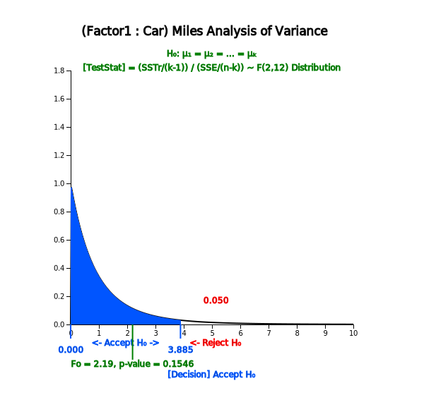

9.2.1 Completely Randomized Design
If five drivers (1, 2, 3, 4, 5) plan to drive the car to measure the fuel mileage of all cars a day, the fuel mileage of the car may be affected by the driver. One solution would be to allocate 15 cars randomly to five drivers and then to randomize the sequence of experiments as well. For example, each car is numbered from 1 to 15 and then, the experiment of the fuel mileage is conducted in the order of numbers that come out using drawing a random number. Such an experiment would reduce the likelihood of differences caused by external factors such as the driver, daily wind speed and wind direction, because randomized experiments make all external factors equally affecting the all observed measurement values. This method of experiments is called a completely randomized design of experiments. Table 9.2.1 shows an example allocation of experiments by this method. Symbols A, B and C represent the three types of cars.
| Driver | 1 | 2 | 3 | 4 | 5 |
|---|---|---|---|---|---|
| Car Type | B | A | B | C | A |
| B | C | A | A | C | |
| C | B | A | B | C |
In general, in order to achieve the purpose of the analysis of variance, it is necessary to plan experiments thoroughly in advance for obtaining data properly. The completely randomized design method explained as above is studied in detail at the Design of Experiments area in Statistics. From the standpoint of the experimental design, the one-way analysis of variance technique is called an analysis of the single factor design.
9.2.2 Randomized Block Design
| Driver | 1 | 2 | 3 | 4 | 5 |
|---|---|---|---|---|---|
| Car Type | A(22.4) | B(12.6) | C(18.7) | A(21.1) | A(24.5) |
| (gas mileage) | C(20.2) | C(15.2) | A(19.7) | B(17.8) | C(23.8) |
| B(16.3) | A(16.1) | B(15.9) | C(18.9) | B(21.0) |
Table 9.2.2 shows that the total observed values are divided into five groups by driver, called blocks so that they have the same characteristics. The variable representing blocks, such as the driver, is referred to as a block variable. A block variable is considered generally if experimental results are influenced significantly by this variable which is different from the factor. For example, when examining the yield resulting from rice variety, if the fields of the rice paddy used in the experiment do not have the same fertility, divide the fields into several blocks which have the same fertility and then all varieties of rice are planted in each block of the rice paddy. This would eliminate the influence of the rice paddy which have different fertility and would allow for a more accurate examination of the differences in yield between rice varieties.
Statistical model of the randomized block design with \(b\) blocks can be represented as follows: $$ Y_{ij} = \mu + \alpha_i + B_j + \epsilon_{ij}, \quad i=1,2, ... ,k, \; j=1,2, ... ,b $$ In this equation, \(B_j\) is the effect of \(j^{th}\) level of the block variable to the response variable. In the randomized block design, the variation resulting from the difference between levels of the block variable can be separated from the error term of the variation of the factor independently. In the randomized block design, the total variation is divided into as follows: $$ Y_{ij} - {\overline Y}_{\cdot \cdot} = (Y_{ij} - {\overline Y}_{i \cdot} - {\overline Y}_{\cdot j} + {\overline Y}_{\cdot \cdot}) + ({\overline Y}_{i \cdot} - {\overline Y}_{\cdot \cdot}) +({\overline Y}_{\cdot j} - {\overline Y}_{\cdot \cdot}) $$ If you square both sides of the equation above and then combine for all \(i\) and \(j\), you can obtain several sums of squares as in the one-way analysis of variance as follows:
Total sum of squares :
SST = \(\sum_{i=1}^{k} \sum_{j=1}^{b} ( Y_{ij} - {\overline Y}_{\cdot \cdot} )^2 \) ,
degrees of freedom ; \(bk - 1\)
Error sum of squares :
SSE = \(\sum_{i=1}^{k} \sum_{j=1}^{b} ( {Y}_{ij} - {\overline Y}_{i \cdot} - {\overline Y}_{\cdot j} + {\overline Y}_{\cdot \cdot})^2 \) ,
degrees of freedom ; \((b-1)(k-1)\)
Treatment sum of squares :
SSTr = \(\sum_{i=1}^{k} \sum_{j=1}^{b} ( {\overline Y}_{i \cdot} - {\overline Y}_{\cdot \cdot} )^2 \)
= \(b\sum_{i=1}^{k} ( {\overline Y}_{i \cdot} - {\overline Y}_{\cdot \cdot} )^2 \) ,
degrees of freedom ; \(k - 1\)
Block sum of squares :
SSB = \(\sum_{i=1}^{k} \sum_{j=1}^{b} ( {\overline Y}_{\cdot j} - {\overline Y}_{\cdot \cdot} )^2 \)
= \(k \sum_{j=1}^{b} ( {\overline Y}_{\cdot j} - {\overline Y}_{\cdot \cdot} )^2 \),
degrees of freedom ; \(b - 1\)
The following facts are always established in the randomized block design.
Sum of squares : SST = SSE + SSTr + SSB
Degrees of freedom : \(bk -1 = (b-1)(k-1) + (k-1) + (b-1) \)
| Variation | Sum of Squares | Degree of freedom | Mean Squares | F value |
|---|---|---|---|---|
| Treatment | SSTr | \(k-1\) | MSTr=\(\frac{SSTr}{k-1}\) | \(F_0 = \frac{MSTr}{MSE}\) |
| Block | SSB | \(b-1\) | MSB=\(\frac{SSB}{b-1}\) | |
| Error | SSE | \((b-1)(k-1)\) | MSE=\(\frac{SSE}{(b-1)(k-1)}\) | |
| Total | SST | \(bk-1\) |
In the randomized block design, the entire experiments are not randomized unlike the completely randomized design, but only the experiments in each block are randomized.
Another important thing to note in the randomized block design is that, although the variation of the block variable was separated from the error variation, the main objective is to test the difference between levels of a factor as in the one-way analysis of variance. The test for differences between the levels of the block variable is not important, because the block variable is used to reduce the error variation and to make the test for differences between the levels of the factor more accurate.
In addition, the error mean square (MSE) does not always decrease, because although the block variation is separated from the error variation of the one-way analysis of variance, the degrees of freedom are also reduced.
Example 9.2.1 Table 9.2.4 is the rearrangement of the fuel mileage data in Table 9.2.2 measured by five drivers and car types.
| Driver | 1 | 2 | 3 | 4 | 5 | Average(\(\overline y_{i \cdot}\)) |
|---|---|---|---|---|---|---|
| Car Type A | 22.4 | 16.1 | 19.7 | 21.1 | 24.5 | 20.76 |
| Car Type B | 16.3 | 12.6 | 15.9 | 17.8 | 21.0 | 16.72 |
| Car Type C | 20.2 | 15.2 | 18.7 | 18.9 | 23.8 | 19.36 |
| Average(\(\overline y_{\cdot j}\)) | 19.63 | 14.63 | 18.10 | 19.27 | 23.10 | 18.947 |
Answer

<Figure 9.2.1> Data input for randomized block design for 『eStat』 ANOVA
|




(There is no standard deviation of single data and denoted as NaN)

In average, car type A has the best fuel mileage than other car types. In order to examine more about the differences between car types, the multiple comparison test in the previous section can be applied. In this example, you can use one HSD value for all mean comparisons, because the number of repetitions at each level is the same.
\(\quad \small HSD = q_{3,8; 0.05} \sqrt {\frac{MSE}{r}} = (4.041) \sqrt{\frac{0.484}{5}} \) = 1.257
Therefore, there is a significant difference in fuel mileage between all three types of cars, since the differences between the mean values (4.04, 1.40, 2.64) are all greater than the critical value of 1.257.
The same analysis of randomized design can be done using 『eStatU』 by following data input and clicking [Execute] button..
[ - ]
| Hypothesis | Ho : μ1 = μ2 = ... = μk | |||
| H1 : At least one pair of population means is not equal | ||||
| Test Type | F-test (ANOVA) | |||
| Sample Data | (Treatment 3 ≤ k ≤ 8) | |||
| Block 1 | x̄1⋅ | |||
| Block 2 | x̄2⋅ | |||
| Block 3 | x̄3⋅ | |||
| Block 4 | x̄4⋅ | |||
| Block 5 | x̄5⋅ | |||
| Block 6 | x̄6⋅ | |||
| Block 7 | x̄7⋅ | |||
| Block 8 | x̄8⋅ | |||
| Block 9 | x̄9⋅ | |||
| Treatment mean | x̄⋅1 | x̄⋅2 | x̄⋅3 | x̄⋅4 | |
| x̄⋅5 | x̄⋅6 | x̄⋅7 | x̄⋅8 | x̄⋅⋅ |
|
Practice 9.2.1
The following is the result of an agronomist's survey of the yield of four varieties of wheat by using the
randomized block design of the three cultivated areas (block). Test whether the mean yields of the four wheats
are the same or not with 5% significance level.
[Ex] ⇨ eBook ⇨ PR090201_WheatAreaYield.csv
|
9.2.3 Latin Square Design
In the Latin square design, we assign one sources of extraneous variation to the columns of the square and the second source of extraneous variation to the rows of the square. We then assign the treatments in such a way that each treatment occurs one and only once in each row and each column. The number of rows, the number of columns, and the number of treatments, therefore, are all equal.
Table 9.2.5 shows a 3 × 3 typical Latin squares with three rows, three columns and three treatments designated by capital letters A, B, C.
| Column 1 (Road 1) | Column 2 (Road 2 | Column 3 (Road 3) | |
|---|---|---|---|
| Row 1 (Driver 1) | A | B | C |
| Row 2 (Driver 2) | B | C | A |
| Row 3 (Driver 3) | C | A | B |
Table 9.2.6 shows a 4 × 4 typical Latin squares with four rows, four columns and four treatments designated by capital letters A, B, C, D.
| Column 1 (Road 1) | Column 2 (Road 2 | Column 3 (Road 3) | Column 4 (Road 4) | |
|---|---|---|---|---|
| Row 1 (Driver 1) | A | B | C | D |
| Row 2 (Driver 2) | B | C | D | A |
| Row 3 (Driver 3) | C | D | A | B |
| Row 4 (Driver 4) | D | A | B | C |
In the Latin square design, treatments can be assigned randomly in such a way that the car type occurs one and only once in each row and each column. Therefore, there are many possible designs of 3 × 3 and 4 × 4 Latin square. We get randomization in the Latin square by randomly selection a square of the desired dimension from all possible squares of that dimension. One method of doing this is to randomly assign a different treatments to each cell in each column, with the restriction that each treatment must appear one and only once in each row.
Small Latin squares provided only a small number of degrees of freedom for the error mean square. So a minimum size of 5 × 5 is usually recommended.
The hypothesis of Latin square design with \(r\) treatments is as follows:
Null Hypothesis \(\qquad \qquad H _{0} : \mu_{1} = \mu_{2} = \cdots = \mu_{r} \)
Alternative Hypothesis \(\quad \; H_{1} : \) At least one pair of \(\mu_i \) is not equal.
Statistical model of the \(r × r \) Latin square design with \(r\) treatments can be represented as follows: $$ Y_{ijk} = \mu + \alpha_i + \beta_j + \gamma_k + \epsilon_{ijk}, \quad i=1,2, ... ,r, \; j=1,2, ... ,r, \; k=1,2, ... , r $$ Here \(\mu_i = \mu + \alpha_i\). In this equation, \(\alpha_i\) is the effect of \(i^{th}\) level of the row block variable to the response variable and \(\beta_j\) is the effect of \(j^{th}\) level of the column block variable to the response variable. \(\gamma_k\) is the effect of \(k^{th}\) level of the response variable.
Notation for row averages, column averages and treatment averages of \(r × r \) Latin squre data are as follows;
| Column 1 | Column 2 | \(\cdots \) | Column r | Row Average | |
|---|---|---|---|---|---|
| Row 1 | \({\overline Y}_{ 1 \cdot \cdot} \) | ||||
| Row 2 | \({\overline Y}_{ 2 \cdot \cdot} \) | ||||
| \(\cdots \) | \(\cdots \) | \(Y_{ijk}\) | \(\cdots \) | \(\cdots \) | |
| Row r | \({\overline Y}_{ r \cdot \cdot} \) | ||||
| Column Average | \({\overline Y}_{ \cdot 1 \cdot} \) | \({\overline Y}_{ \cdot 2 \cdot} \) | \(\cdots\) | \({\overline Y}_{ \cdot r \cdot} \) | \({\overline Y}_{ \cdot \cdot \cdot} \) |
| Treatment Average | \({\overline Y}_{ \cdot \cdot 1} \) | \({\overline Y}_{ \cdot \cdot 2} \) | \(\cdots\) | \({\overline Y}_{ \cdot \cdot r} \) |
In the Latin square design, the variation resulting from the difference between levels of two block variables can be separated from the error term of the variation of the factor independently. In the Latin square design, the total variation is divided into as follows: $$ Y_{ijk} - {\overline Y}_{\cdot \cdot \cdot} = (Y_{ijk} - {\overline Y}_{i \cdot \cdot} - {\overline Y}_{\cdot j \cdot} - {\overline Y}_{\cdot \cdot k} + 2 {\overline Y}_{\cdot \cdot \cdot}) + ({\overline Y}_{i \cdot \cdot} - {\overline Y}_{\cdot \cdot \cdot}) + ({\overline Y}_{\cdot j \cdot} - {\overline Y}_{\cdot \cdot \cdot}) + ({\overline Y}_{\cdot \cdot k} - {\overline Y}_{\cdot \cdot \cdot}) $$ If you square both sides of the equation above and then combine for all \(i , j\) and \(k\), you can obtain the following sums of squares:
Total sum of squares :
SST = \(\sum_{i=1}^{r} \sum_{j=1}^{r} \sum_{k=1}^{r} ( Y_{ijk} - {\overline Y}_{\cdot \cdot \cdot} )^2 \) ,
degrees of freedom ; \(r^3 - 1\)
Error sum of squares :
SSE = \(\sum_{i=1}^{r} \sum_{j=1}^{r} \sum_{k=1}^{r} ( {Y}_{ijk} - {\overline Y}_{i \cdot \cdot} - {\overline Y}_{\cdot j \cdot} - {\overline Y}_{\cdot \cdot k} + 2 {\overline Y}_{\cdot \cdot \cdot})^2 \) ,
degrees of freedom ; \(r^2 -3r + 2\)
Row sum of squares :
SSTr = \(\sum_{i=1}^{r} \sum_{j=1}^{r} \sum_{k=1}^{r} ( {\overline Y}_{i \cdot \cdot} - {\overline Y}_{\cdot \cdot \cdot} )^2 \)
degrees of freedom ; \(r - 1\)
Column sum of squares :
SSB = \(\sum_{i=1}^{r} \sum_{j=1}^{r} \sum_{k=1}^{r} ( {\overline Y}_{\cdot j \cdot} - {\overline Y}_{\cdot \cdot \cdot} )^2 \)
degrees of freedom ; \(r - 1\)
Treatment sum of squares :
SSTr = \(\sum_{i=1}^{r} \sum_{j=1}^{r} \sum_{k=1}^{r} ( {\overline Y}_{\cdot \cdot k} - {\overline Y}_{\cdot \cdot \cdot} )^2 \)
degrees of freedom ; \(r - 1\)
The following facts are always established in the Latin square design.
Sum of squares : SST = SSE + SSR + SSC + SSTr
Degrees of freedom : \(r^3 -1 = (r^2 - 3r + 2) + (r-1) + (r-1) + (r-1) \)
| Variation | Sum of Squares | Degree of freedom | Mean Squares | F value |
|---|---|---|---|---|
| Treatment | SSTr | \(r-1\) | MSTr=\(\frac{SSTr}{r-1}\) | \(F_0 = \frac{MSTr}{MSE}\) |
| Row | SSR | \(r-1\) | MSR=\(\frac{SSB}{r-1}\) | |
| Columnk | SSC | \(r-1\) | MSC=\(\frac{SSB}{r-1}\) | |
| Error | SSE | \(r^2 - 3r + 2\) | MSE=\(\frac{SSE}{(r^2 - 3r + 2)}\) | |
| Total | SST | \(r^3 -1\) |
Example 9.2.2 Table 9.2.9 is the fuel mileage data of four car types (A, B, C, D) measured by four drivers and four road types with Latin square design.
| Column 1 (Road 1) | Column 2 (Road 2) | Column 3 (Road 3) | Column 4 (Road 4) | |
|---|---|---|---|---|
| Row 1 (Driver 1) | A (22) | B (16) | C (19) | D (21) |
| Row 2 (Driver 2) | B (24) | C (16) | D (12) | A (15) |
| Row 3 (Driver 3) | C (17) | D (21) | A (20) | B (15) |
| Row 4 (Driver 4) | D (18) | A (18) | B (23) | C (22) |
Use 『eStatU』 to do the analysis of variance whether the four car types have the same fuel mileage.
Answer
In 『eStatU』, click [Testing Hypothesis ANOVA – Latin Square Design], select the number of treatment r = 4 and enter data as shown in <Figure 9.2.10>.
[ - ]
| Hypothesis | Ho : μ1 = μ2 = ... = μk |
| H1 : At least one pair of population means is not equal | |
| Test Type | F-test (ANOVA) |
| Sample Data | r = () |
| 1 | 2 | 3 | 4 | 5 | 6 | |||||||||
| Row1 | A | B | C | D | x̄1⋅⋅ | |||||||||
| Row2 | B | C | D | A | x̄2⋅⋅ | |||||||||
| Row3 | C | D | A | B | x̄3⋅⋅ | |||||||||
| Row4 | D | A | B | C | x̄4⋅⋅ | |||||||||
| Row5 | x̄5⋅⋅ | |||||||||||||
| Row6 | x̄6⋅⋅ | |||||||||||||
| x̄⋅1⋅ | x̄⋅2⋅ | x̄⋅3⋅ | x̄⋅4⋅ | x̄⋅5⋅ | x̄⋅6⋅ | |||||||||
| x̄⋅⋅1 | x̄⋅⋅2 | x̄⋅⋅3 | x̄⋅⋅4 | x̄⋅⋅5 | x̄⋅⋅6 | x̄⋅⋅⋅ |
Click [Execute] button to show Dot graph by car type in Latin square design as <Figure 9.2.11> and ANOVA table as in <Figure 9.2.12>. The dot graph and result of the ANOVA is that there is no difference in fuel mileage between the car types.
|
Practice 9.2.2
To study the effect of packaging on the sales of a certain cereal, a researcher tries three different packaging methods (treatments) at four different times of the week (columns) in four different supermarket chains (rows). The variable of interest is daily salse. The following table shows the results of the study. Do these data show a significant difference in shoppers’ response to the different packaging methods? Let \(\alpha\) = 0.05.
|
Multiple Choice Exercise
*** Choose one answer and click [Submit] button
9.9 What is the name of variable which effects response variable in the experimental design?
9.10 In order to compare the fuel mileage of three types of cars, three drivers would like to drive cars, but fuel mileage may be affected by the driver. What is the name of variable like drivers?
9.11 When we compare the fuel mileage of three types of cars, which experimental design is used to reduce the effect of drivers?